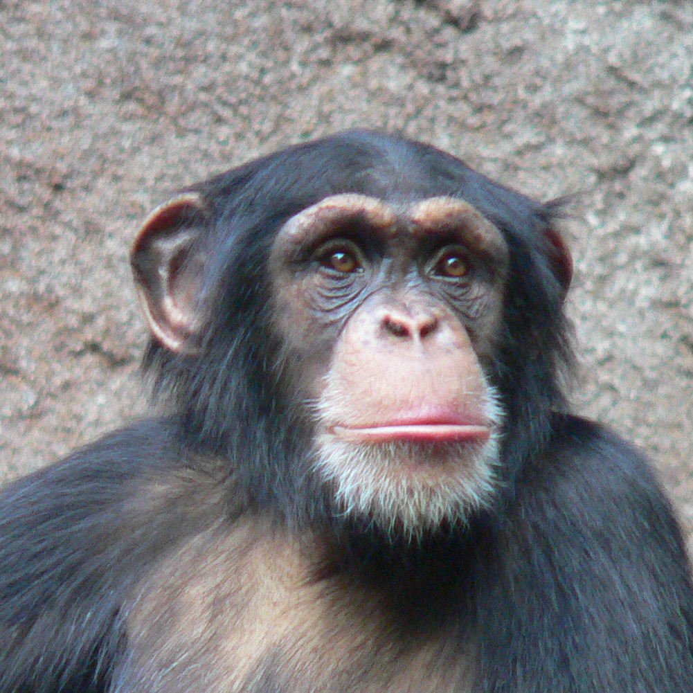

Opice (též vyšší primáti, antropoidi, antropoidní primáti; lat. Simiiformes, Anthropoidea) je infrařád náležející do vyšší taxonomické jednotky podřádu Haplorhini, od kterého se odlišuje tím, že neobsahuje čeleď nártounovitých.
Infrařád opic je rozdělen na tzv. opice novosvětské a opice starosvětské. Novosvětské žijí v tropech a subtropech ve Střední a Jižní Americe, nejčastěji v amazonském rozvodí. Většina z nich přímo v hustých a dobře úživných lesích, ale některé druhy i vysoko v Andách, kde teplota klesá až k 5 °C. Starosvětské jsou domovem v Africe, a to od tropických lesů přes subtropy až po okraje savan a horské oblasti Etiopie a pohoří Atlas, dále žijí na Indickém poloostrově a hlavně v tropické Jihovýchodní Asii. Jeden druh, makak magot (někdy také makak bezocasý) obývá i skalnatá území Gibraltaru na nejjižnější výspě Evropy.
Nutno připomenout, že mezi starosvětské opice patří i lidé, živočichové, kteří osídlili téměř celou pevninu zeměkoule.
Rozdělení podřádu vyšších primátů na infrařád nártounů a infrařád opic vyplynulo z moderní kladistické klasifikace, kdy se zařazení jednotlivých živočichů do skupin neřídí vzhledem nebo způsobem života, ale děje se na základě genetických poznatků, kdy se zohledňuje vzájemná příbuznost předků.
Hlavní 2 skupiny jsou Ploskonosí(Platyrrhini) a Úzkonosí(Catarrhini).